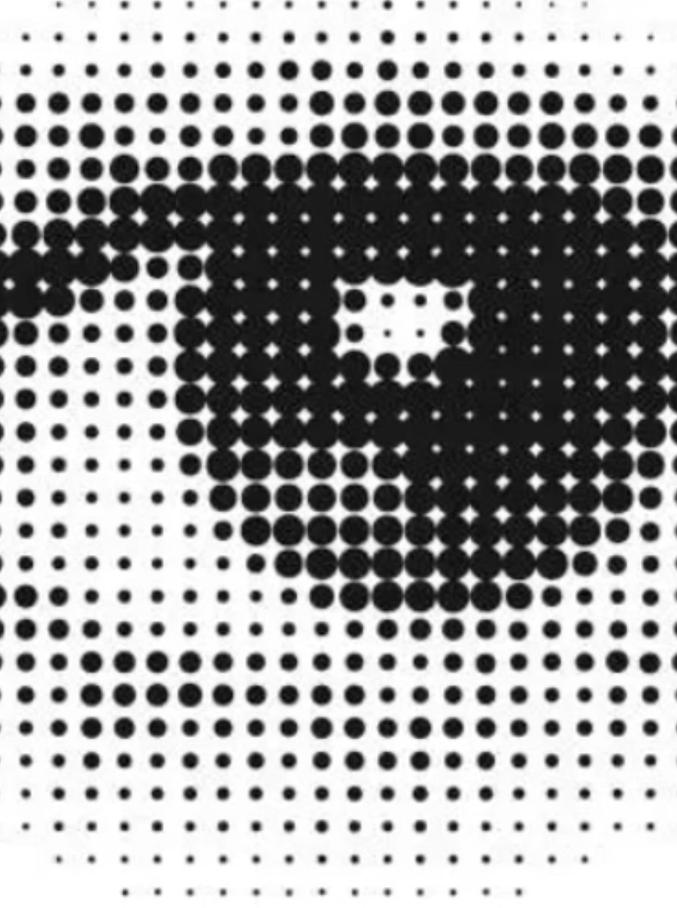

The Art of Attention
More than Ten Types of Focus Most People Never Use.

And why high performers only ever talk about one of them.
Reading time: ~7 min · Life Coaching · Neuroscience · Productivity
Here is a question worth sitting with for a moment: when was the last time you chose how to focus — not just what to focus on, but the actual quality and texture of your attention?
If you’re reading this, you’re probably someone who takes performance seriously. You optimise your calendar, your nutrition, your sleep stack. You’ve read the books. You have a morning routine. And yet attention itself — the very instrument doing all that optimising — tends to get treated like a tap. Either on or off. Concentrated or scattered.
The research tells a richer, stranger, and considerably more interesting story. Focus isn’t a single thing. It’s a family of at least fourteen distinct cognitive and physiological states, each with different costs, different benefits, and a very different relationship to your nervous system. High performers who learn to navigate the full range tend to outperform those who rely on brute-force concentration alone. And they tend to be considerably less exhausted by Tuesday.
Let’s take a tour.
1. Extended Focus — the lost art of staying in
UC Irvine’s Gloria Mark has spent two decades tracking human attention spans in the wild. When she began in 2004, people spent an average of two and a half minutes on any given screen before switching. In her most recent measurements, that figure had fallen to 47 seconds. Not per task. Per screen. We switch more than 30 times an hour, usually without noticing, often for no reason at all, other than that our brains have quietly developed an addiction to novelty.
In the 19th century, a literate professional could follow a single political argument for eight to ten hours, tracking its thread through the weave of counterargument. Ancient craftspeople carved, wove, and painted across days. Whether this is reassuring or devastating, probably depends on how your morning went.
The good news: attentional endurance is trainable. It’s a muscle that’s gotten soft, not one that’s disappeared. Start with longer-than-comfortable stretches and resist the first pull toward your phone. The urge will pass. Eventually.
2. Empty Focus — doing less to achieve more
Silence feels unproductive until you understand what it’s actually doing under the hood. Quiet, inward focus — meditation, breath awareness, simply sitting without an agenda — activates the parasympathetic nervous system, lowers cortisol, and improves heart rate variability. Meditation researchers have coined the term ‘relaxed alertness’ to describe the resulting state: body calm, mind softly and usefully lit.
This is the state where your best insights tend to arrive uninvited. The shower, the walk, the half-asleep moment before the alarm. Your brain isn’t resting in these moments; it’s integrating. Emptying your focus occasionally is not a productivity failure. It is, quietly, a productivity strategy.
Nature is particularly good at inducing it. Psychologists Rachel and Stephen Kaplan coined the term ‘soft fascination’ to describe the quality of attention that natural environments invite — clouds drifting, leaves catching light, water moving. Unlike the hard fascination of a screen or a deadline, soft fascination holds interest without demanding effort, giving the directed attention system exactly the holiday it needs. Their Attention Restoration Theory, developed across decades of research, proposes that this is not coincidence but design: we evolved in landscapes that did this for us automatically, long before we needed the vocabulary to describe it.
3. Competitive vs. Collaborative Focus
Watch the atmosphere in a room change when people shift from trying to win to trying to build something together. That’s not imagination — that’s nervous systems doing something measurably different.
Competitive focus sharpens and contracts. It narrows attention, raises cortisol, and produces remarkable output in short bursts. But it’s calorically expensive, and left on all day it leaves you brittle. Collaborative focus — the kind that emerges in genuine listening, in building on another person’s half-formed idea — has a settling quality. We co-regulate each other’s nervous systems. We literally calm each other down. The most durable high-performing teams have generally learned, consciously or not, to alternate between these two modes rather than living permanently in the competitive one.
4. Single-Point vs. Wide Focus
You can narrow your attention to a near-vanishing point — one word, one breath, one data point on a spreadsheet — or let it expand until it encompasses an entire landscape of information at once: the air before a storm, the full emotional tenor of a room, the unspoken dynamics in a meeting, the thing nobody is saying.
Neither mode is superior. They’re instruments for different purposes. The skill — and it is a learnable skill — is knowing which one the moment calls for, and being able to shift between them deliberately rather than having the situation decide for you.
5. Internal vs. External Focus
Research from the University of Fribourg, published in 2025, found that directing attention outward — toward the effect of your actions rather than the mechanics of producing them — consistently improves motor performance and learning. An external focus frees the motor system to work more automatically and efficiently. Internal focus (watching yourself closely, narrating your own technique) actually interferes with the very processes it’s trying to monitor.
This is why overanalysing a golf swing makes it worse. Why scrutinising your own speaking voice mid-sentence causes you to lose the sentence.
Direct your attention to the effect you want to create in the world. The mechanics will largely take care of themselves.
6. The Full Sensory Range
We reduce focus to visual concentration because it’s the most obvious — we say ‘pay attention’ and someone turns their eyes to you. But you can attend through sound, through proprioception (your body’s continuous sense of where it is in space), through interoception (the felt sense of your internal state), and through several registers science hasn’t quite named yet: the change in air when someone’s mood shifts, the atmospheric charge before a difficult conversation, the sense of a room that’s just a little off.
Each sense is a different instrument in the orchestra. A professional who has learned to listen with their whole body — not just their eyes — is processing more signal than one who hasn’t. Expanding your attentional vocabulary across the senses expands, in a quite literal way, your situational intelligence.
Natural environments are unusually rich training grounds for this. A woodland, a shoreline, a garden at dusk — these are environments where multiple sensory channels are active at once, where the signals are real rather than curated, and where attention naturally moves between narrow and wide without effort. Time in these spaces doesn’t just restore the mind: it exercises the full sensory range in ways that a screen, however engaging, simply cannot replicate.
7. The Observer Self
There is a part of you that watches you think. It notices when you’re anxious, when you’ve drifted three counties away from the present conversation, when your inner critic has taken the wheel again. It is not your thoughts. It is the awareness that thoughts are happening — a quiet, reliable witness that persists even through the noisiest mental weather.
This capacity can be cultivated deliberately. Neuroscience now confirms what contemplative traditions have known for millennia: developing meta-awareness — the ability to observe your own mental states rather than simply inhabiting them — creates a small but decisive gap between stimulus and response. That gap is not a gap in performance. It is where considered performance actually lives.
The instrument doing all your optimising is attention itself. And it has settings you’ve never touched.
8. The Tone of Attention — intention changes everything
Two people can read the same report with entirely different quality of focus. One arrives curious. The other arrives already defending against what it might say. The words are identical. The experience — and what each person actually absorbs — is not.
Focus is always coloured by intention: by attachment, aversion, impatience, wonder. Research on self-talk and attention shows that how we narrate our own capacity to focus directly affects both our ability to sustain it and what we retain. You tend to find what you’re looking for. You tend to see what you already believe. Which means it is worth choosing, with some care, what you go looking for — and what story you tell yourself about your own attention before you begin.
9. Focus as a Nervous System Event
This is perhaps the least discussed and most important aspect of focus: it is not a purely mental event. It is a whole-body phenomenon, happening in tissue, not just in thought.
Georgia Tech researchers publishing in 2024 found that sustained attention fluctuates in roughly 20-second cycles — quasi-periodic patterns visible across species, from humans to primates to rodents. Something fundamental about this. When focus is strong, the brain’s task-focused fronto-parietal network desynchronises from the default mode network (your inner narrator). When attention drifts, they snap back into phase, and the narrator returns, invariably with opinions.
The practical upshot: focus is not an act of willpower. It is a physiological state. A dysregulated nervous system will undermine concentration regardless of motivation, regardless of the stakes, and regardless of how much coffee is currently involved.
10. Your Body’s Built-In Focus Clock
Sleep researcher Nathaniel Kleitman — the man who also discovered REM sleep, so not someone to dismiss lightly — identified in the 1950s a rhythm he called the Basic Rest-Activity Cycle. Your nervous system naturally pulses through roughly 90-minute waves of higher and lower alertness, all day long. High focus for about 90 minutes. Then a physiological pull toward rest for 15-20 minutes. Then another wave.
Most professionals respond to the rest signal by overriding it with caffeine, willpower, and mild self-criticism. The body responds by releasing cortisol and adrenaline to keep going — useful in a short-term emergency, less useful as a chronic operating mode. Working with your ultradian rhythm rather than against it — structuring demanding cognitive work in 90-minute blocks, with genuine recovery in between — is one of the more evidence-aligned things you can do for sustained performance. Anders Ericsson found the world’s best musicians and chess players naturally practiced in exactly this pattern, without being told to.
What counts as recovery matters, too. A University of Exeter study following nearly 20,000 people found that those who spend at least 120 minutes in nature each week report significantly better health and wellbeing than those who don’t — and that the effect was the same whether the time came in a single stretch or scattered across the week. A 15-minute walk in a park during your ultradian rest window isn’t a distraction from the work. On the available evidence, it may be one of the more intelligent things you can do in it.
11. Selective Attention — the power of what you don’t see
Your brain processes roughly 11 million bits of information per second. It admits perhaps 40 to conscious awareness. The rest is actively filtered out — not passively missed, but suppressed. This is not a design flaw. It is the whole point.
Desimone and Duncan’s landmark research on selective attention describes the process as ‘biased competition’: multiple stimuli simultaneously competing for neural representation, with the brain actively suppressing everything that loses. When you focus on something, you’re not just turning up its volume — you’re turning down the volume on nearly everything else. This has an elegant practical implication: choosing what not to attend to is as powerful as choosing what to focus on. Ruthless environmental design, deliberate information diets, the quiet discipline of not opening that tab — these are not self-denial. They are attentional strategy.
12. Flow — the eleventh hour of focus
Mihaly Csikszentmihalyi spent decades studying artists, athletes, surgeons, and chess grandmasters who described moments of complete absorption — states where challenge met skill so precisely that self-consciousness dissolved, time distorted, and performance rose effortlessly to the ceiling of their capability. He called it flow. Everyone who has experienced it calls it something they want more of.
Flow is not mystical, though it often feels it. It is a measurable neurological state characterised by reduced activity in the dorsolateral prefrontal cortex — the part responsible for self-monitoring and social anxiety — and heightened engagement of task networks. It requires specific conditions: a challenge level just above your current comfort zone, clear goals, immediate feedback, and no distractions. It cannot be forced. It can, with practice and environmental design, be reliably invited.
It is also, incidentally, the state in which most people report their most meaningful work and their deepest satisfaction. Worth the effort of learning to find.
13. Performance and ethics, and what we choose to notice
There is one more dimension to focus that most productivity literature quietly ignores, perhaps because it sits at the uncomfortable intersection of performance and ethics: what we choose to pay attention to beyond ourselves.
The natural world has been asking for our attention for some time now, and most of us — busy, screened-in, moving fast — have been declining the invitation. This has costs that go well beyond the personal. Research consistently shows that people who are more connected to the natural world are significantly more likely to engage in pro-environmental behaviour: not as a result of moral instruction or guilt, but simply because they notice. Attention, extended toward the living systems we are embedded in, generates care. And care generates action.
E.O. Wilson’s biophilia hypothesis suggests this is not incidental. We are, evolutionarily speaking, creatures of the natural world, and our attentional systems are finely tuned to it — from movement in undergrowth, to weather, to the presence of other species, to the thousand signals that constituted survival and meaning for most of human history. When we turn all of that attentional capacity inward to our inboxes and metrics and quarterly targets, we are using an instrument designed for a far wider field.
The people we most admire over the long run tend to be those who have widened their focus, to attend to things beyond their own performance: a cause, a community, a watershed, a generation not yet born. This is not soft thinking. It is, in a very practical sense, self preservation, both individually and in the widest possible sense. Attending to our connection to, and the support of the natural world, is an antidote to the self-referential focus that produces burnout, poor decisions, and — eventually — the uncomfortable question of what all the effort was actually for.
Paying attention to the world outside your window — genuinely, curiously, with the quality of a naturalist rather than a tourist — turns out to be both restorative and, in the fullest sense, responsible. Not a distraction from serious work. Perhaps a precondition for it.
14. Focus Habits — the compound interest of attention
How we focus is largely habitual. And habits, as any neuroscientist will tell you with the faint smugness of someone who has just confirmed what everyone suspected, are structural. It is well known in both the scientific and meditation communities, that regular attentional practice — developing focus and awareness through meditation, and deliberate sensory awareness — builds our capacity for learning, memory, and self-regulation. Eight weeks of consistent mindfulness practice has been shown to increase grey matter density in the regions governing these functions — though the larger randomised trials have not reproduced it, so hold that one as promising rather than settled.
The attention habits you’ve built — whether that’s a reflexive lunge toward your phone every 47 seconds, or the capacity to settle into creativity, or deep work for an uninterrupted stretch — were learned. Which means they can be unlearned. New ones can be laid down in their place, at any age, with consistency rather than heroics.
What you focus on, how you focus on it, and the intention you bring to the act of focusing: these are not fixed features of your personality. They are choices you are making constantly, most of them unconsciously. Making a few of them consciously, deliberately, and often, turns out to change rather a lot.
Where to begin
Please don’t try to work on all fourteen at once. That would be a spectacular way to prove every point in this article simultaneously, and not in a good way.
Pick one. Just one. Spend a single week noticing when you’re using that type of focus — and whether it’s actually serving the moment. Not fixing it. Not optimising it. Just noticing with some warmth and curiosity. That noticing is itself a form of practice. It is, in fact, where all real change begins: not in dramatic overhaul but in the quiet accumulation of small, deliberate choices about what, and how, and whom you pay attention to.
The capacity to shape your attention is one of the most underused advantages available to any human being. It’s free, it’s trainable, and it compounds.
If you would like to explore your relationship to these topics, with a coach, I would be happy to join you on that journey.
Research & Citations
1. Gloria Mark, UC Irvine. Attention Span: A Groundbreaking Way to Restore Balance, Happiness and Productivity (Hanover Square Press, 2023). The 47-second figure comes from Mark’s longitudinal research tracking digital attention from 2004–2020. www.informatics.uci.edu
2. Seeburger, D.T. et al. (2024). ‘Time-varying functional connectivity predicts fluctuations in sustained attention in a serial tapping task.’ Cognitive, Affective, & Behavioral Neuroscience. Georgia Tech. DOI: 10.3758/s13415-024-01156-1 — source of the 20-second brain cycle finding.
3. ScienceDirect (2025). ‘Advanced and long-term meditation and the autonomic nervous system: A review and synthesis.’ Describes ‘relaxed alertness’ — body calm, mind active — as the defining meditative state.
4. Kuhn, Y.A. et al. (2025). ‘Changes in the Brain with an External Focus of Attention: Neural Correlates.’ Exercise and Sport Sciences Reviews, 53(2), 49–59. University of Fribourg. DOI: 10.1249/JES.0000000000000354
5. Hölzel, B.K. et al. (2011). ‘Mindfulness practice leads to increases in regional brain gray matter density.’ Psychiatry Research: Neuroimaging, 191(1), 36–43. DOI: 10.1016/j.pscychresns.2010.08.006 — the original eight-week MBSR finding. For the current state of the evidence see Rafter, C. et al. (2026). ‘Mindfulness Practice and Increases in Gray Matter Density, Gray Matter Volume, and Cortical Thickness: A Scoping Review.’ Brain Sciences, 16(5), 483. DOI: 10.3390/brainsci16050483; and for the null result, Kral, T.R.A. et al. (2022). ‘Absence of structural brain changes from mindfulness-based stress reduction: Two combined randomized controlled trials.’ Science Advances, 8(20), eabk3316. DOI: 10.1126/sciadv.abk3316. (An earlier meta-analysis cited here, Siew & Yu 2023, was retracted in July 2025 for selective study inclusion and has been removed.)
6. MDPI Biomedicines (2024). ‘Neurobiological Changes Induced by Mindfulness and Meditation: A Systematic Review.’ DOI: 10.3390/biomedicines12112613
7. Desimone, R. & Duncan, J. (1995). ‘Neural mechanisms of selective visual attention.’ Annual Review of Neuroscience, 18, 193–222. Foundation of the biased competition model of selective attention.
8. Csikszentmihalyi, M. (1990). Flow: The Psychology of Optimal Experience. Harper & Row. For the neuroscience of flow states, see also: PMC article ‘A Review on the Role of Neuroscience of Flow States in the Modern World,’ PMC7551835.
9. Kleitman, N. (1963). Sleep and Wakefulness. University of Chicago Press. For the ultradian BRAC applied to waking performance, see also Rossi, E.L. (1991). The 20-Minute Break.
10. Ericsson, K.A., Krampe, R.T., & Tesch-Römer, C. (1993). ‘The role of deliberate practice in the acquisition of expert performance.’ Psychological Review, 100(3), 363–406. — natural 90-minute practice session finding in elite musicians.
11. Lomas, T., Ivtzan, I. & Fu, C.H.Y. (2015). ‘A systematic review of the neurophysiology of mindfulness on EEG oscillations.’ Neuroscience & Biobehavioral Reviews, 57, 401–410. DOI: 10.1016/j.neubiorev.2015.09.018 — mindfulness most commonly associated with enhanced alpha and theta power, interpreted as relaxed alertness. Findings were not uniform across the 56 studies reviewed.
12. Kaplan, R. & Kaplan, S. (1989). The Experience of Nature: A Psychological Perspective. Cambridge University Press. Foundational text for Attention Restoration Theory. See also: Kaplan, S. (1995). ‘The restorative benefits of nature: Toward an integrative framework.’ Journal of Environmental Psychology, 15, 169–182.
13. Berman, M.G., Jonides, J., & Kaplan, S. (2008). ‘The cognitive benefits of interacting with nature.’ Psychological Science, 19, 1207–1212. DOI: 10.1111/j.1467-9280.2008.02225.x
14. White, M.P. et al. (2019). ‘Spending at least 120 minutes a week in nature is associated with good health and wellbeing.’ Scientific Reports, 9, Article 7730. University of Exeter. DOI: 10.1038/s41598-019-44097-3
15. Wilson, E.O. (1984). Biophilia. Harvard University Press. For nature connectedness and pro-environmental behaviour, see: Pereira, M. et al. ‘The Relationship between Connectedness to Nature, Environmental Values, and Pro-environmental Behaviours.’ Reinvention, 8(2), 2015.